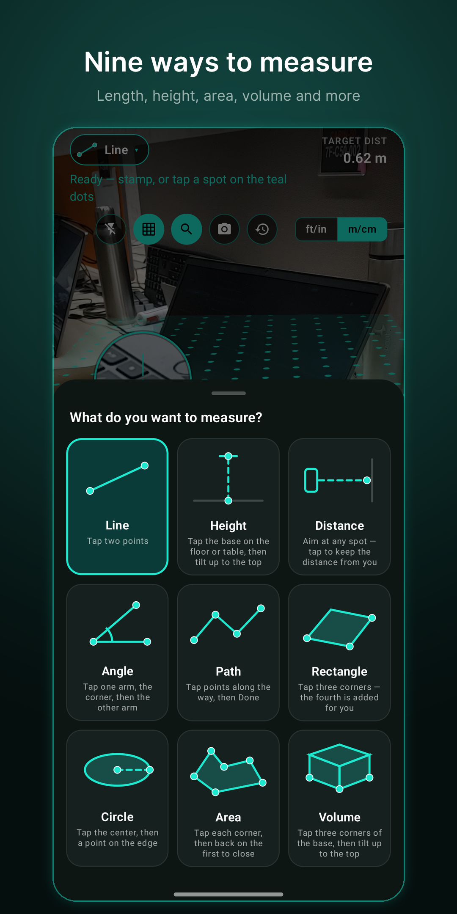
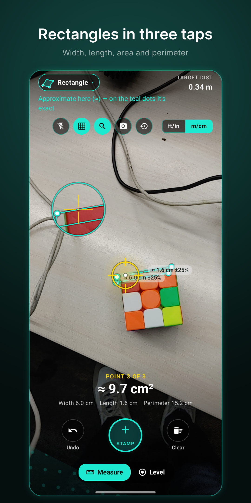

Twelve ways to measure
LineDistance between two points
HeightTap the base, then the top
DistanceHow far something is from you
AngleAny corner, in degrees
PathMany segments, one total
RectangleWidth, length, area, perimeter
CircleDiameter, circumference, area
AreaTrace a room corner by corner
VolumeBoxes: W × D × H
Far heightBuildings & trees, from the ground
Hang picturesFrames laid out level, nail marks on the wall
Will it fit?A life-size box of your sofa, bed or fridge
For your home
🎨 MaterialsPaint, tiles and flooring for any area
🗺 Floor plansA clean plan image of a room to save or share
📁 ProjectsGroup measurements and export a PDF report
❓ Step-by-step helpIllustrated guides on every screen
🌐 LanguagesEnglish, हिन्दी, اردو, తెలుగు
And more
🎯 CalibrateMeasure a bank card once for sharper readings
🧭 CompassHeading, direction, lock a bearing
📶 AccuracyGood, OK or Rough before you place a point
📐 Bubble levelFlat or on an edge
📏 ft-in fractionsReads like a tape: 5 ⅜″
⚡ ShortcutsLong-press the icon for Height, Area, Building
Screenshots


How to install
- Tap Download for Android on your phone.
- Open the downloaded MeasureAR.apk. If Android asks, allow your browser to install unknown apps (Settings → Apps → your browser → Install unknown apps).
- Tap Install, then open MeasureAR and allow the camera.
- If prompted, install Google Play Services for AR from the Play Store. MeasureAR uses it for AR tracking.
Needs an Android phone that supports ARCore (Android 8.0 or newer). Most recent Samsung, Pixel, OnePlus, Xiaomi, Oppo, Vivo and Motorola phones do. See Google's list of supported devices.
Tips for accurate results
- Sweep slowly over the floor or table until the teal dots appear. Points on the teal dots are the most accurate.
- Textured surfaces and good light are detected fastest. Very plain white surfaces are hard for the camera.
- Readings marked ≈ are approximate. For critical work, confirm with a tape measure.
Privacy
No account, no ads, no tracking and no internet access. Your measurements stay on your phone. Privacy policy · Contact: reply2jhani@gmail.com